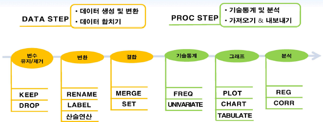
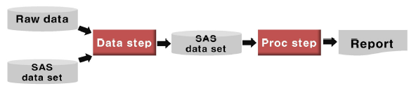
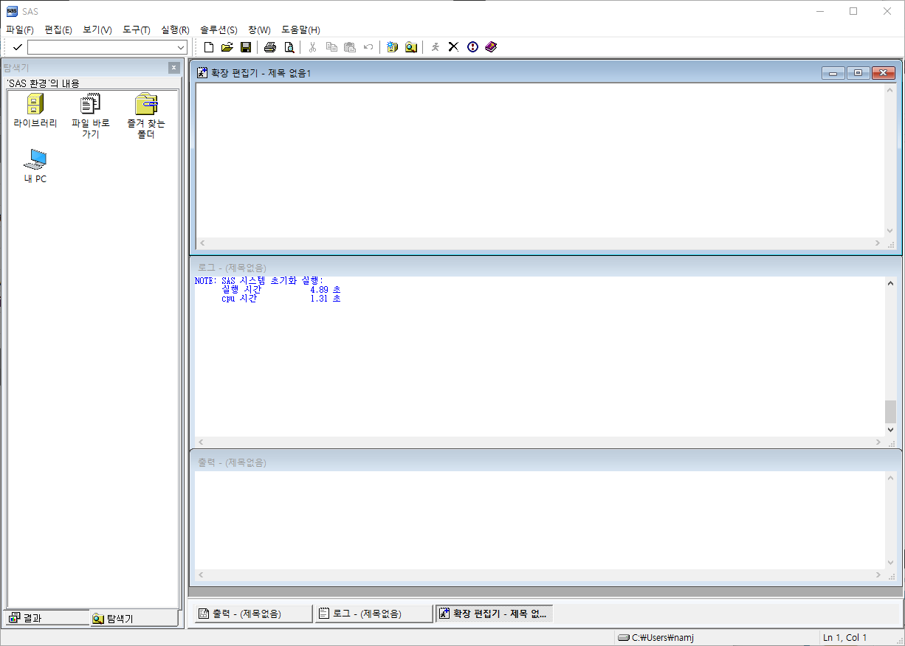
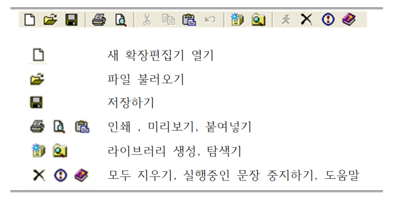
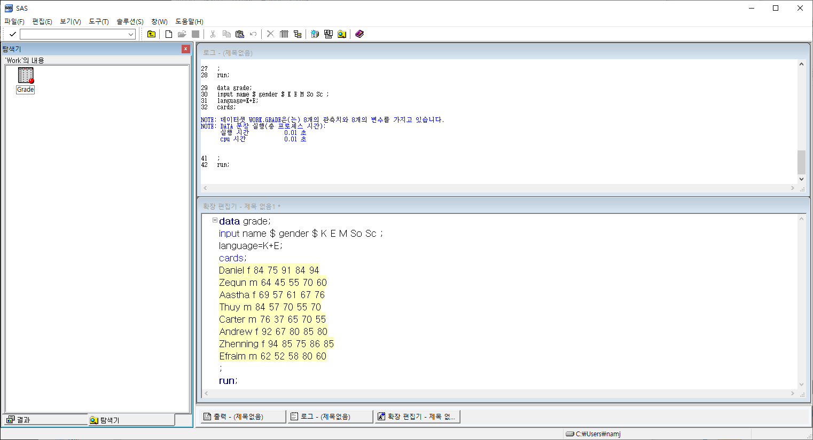
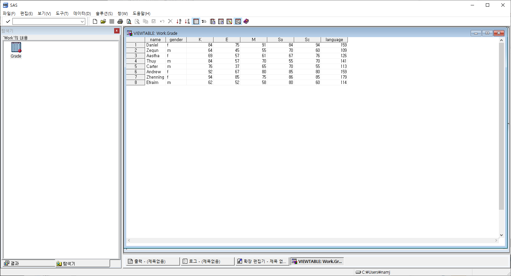
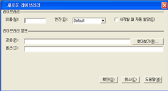

Chapter 1 SAS 개요
1.1 SAS?
SAS (Statistical Analysis System, Strategic Application System)는 1966 North Carolina 주립대학에서 시작되어 현재 스프레드쉬트, 워드, 프리젠테이션, 인트라넷, 의사결정시스템 구축 등 방대한 영역을 다루는 소프트웨어로 발전하였다. 통계분석부터 품질관리, 데이터마이닝 등의 방대한 정보 처리 기능을 제공하는 통계분석용 소프트웨어로써 금융권, 제조업 분야 등에서 널리 쓰이고 있으며, 의약학 분야의 방대한 자료의 통계처리 프로그램으로 유용하게 사용된다.
1.1.1 SAS 프로그램 구성
DATA Step -> PROC Step

SAS 프로그램은 크게 DATA를 다루는 DATA step과 DATA를 분석하는 PROC step으로 구분된다. DATA step은 DATA의 입력 및 DATA의 오류 판단, 수정 및 변형 등을 담당하며 DATA의 추출 및 여러 데이터의 병합 등에 관여한다. PROC step은 DATA step으로부터 생성된 DATASET의 출력, 정렬, 요약 등 간단한 PROCEDURE부터 기술통계, 그래프, 통계분석 등을 담당한다. ### SAS 프로그램 장점
SAS 프로그램은 데이터의 입력과 편집이 수월하며, 프로그램의 변경 또한 유동적이다. 또한, PC 환경에서 일반관리업무를 위한 소프트웨어로 많이 사용되고 있는 여러 프로그램의 형식으로 저장된 데이터를 간편하게 이용할 수 있다. 대단위 자료를 처리하는 데 무리가 없으며, 간단한 기술통계(Descriptive Statistic)부터 다변량 통계 방법까지 현재 공인된 많은 통계 방법론을 포괄하고 있어 대용량 자료의 통계분석에 매우 용이하다.
1.2 SAS 구성요소
1.2.1 SAS 화면구성
SAS 프로그램은 로그창, 확장편집기, 출력창, 결과, 탐색기 다섯 개의 창으로 구성되어 있으며 각 창의 역할은 다음과 같다.
 확장편집기(program window, pgm): 프로그램 명령어 입력창 출력창(output window): 프로그램 실행결과를 출력 로그창(log window): 프로그램 실행과정의 여러 가지 정보 제공 결과창: 프로그램 실행 결과물의 목차 제공 탐색기: 파일 탐색 기능 제공
1.2.2 메뉴
SAS 메뉴는 파일, 편집, 보기, 도구, 실행, 솔류션, 창, 도움말로 구성되어 있으며 그 역할은 다음과 같다.

파일 : 새로운 데이터 파일을 작성하거나 기존의 파일을 불러오고 저장 편집 : 데이터 파일을 복사 편집하는 등의 작업 보기 : 화면상의 윈도우를 표시하는 기능 도구 : 테이블 및 레포트 등의 편집기 기능 실행 : SAS 프로그램을 실행 솔루션 : 통계 분석 및 레포트 작성기능 창 : 윈도우 창간의 전환 도움말 : SAS의 도움말 정보
1.2.3 도구 모음
분석의 편의를 위해 SAS 프로그램은 다음과 같은 도구 모음을 제공한다.

1.3 SAS 기본 형식
data grade;
input name $ gender $ K E M So Sc @@;
cards;
Daniel f 84 75 91 84 94
Zequn m 64 45 55 70 60
Aastha f 69 57 61 67 76
Thuy m 84 57 70 55 70
Carter m 76 37 65 70 55
Andrew f 92 67 80 85 80
Zhenning f 94 85 75 86 85
Efraim m 62 52 58 80 60
;
run;SAS에서 DATA step을 실행할 시 시작은 항상 [DATA 데이터셋명;]이고 끝은 [RUN;]이다. [DATA 데이터셋명;]에서 새로 생성될 데이터셋이 지정되고 이후부터 [RUN;] 이전까지 지정된 명령어를 수행한다. SAS에서 이름을 부여할 수 있는 것은 DATA 다음에 쓰여지는 데이터셋명과 INPUT 다음에 지정하는 변수 이름, PROC step에서 지정하는 OUTPUT 데이터셋명 등이 있다. 이름 부여는 영문자와 숫자를 이용하여 지정 가능하며 숫자가 이름의 처음에 나올 수는 없다.

SAS는 대소문자를 가리지 않으며, 명령문의 끝은 반드시 ‘ ; ’을 붙여야 한다. 설명을 달기 위한 주석처리는 ‘/* 주석 /’으로 하거나 간단한 한줄 처리로 ‘ 주석 ;’ 방식을 이용한다. 변수는 문자변수와 숫자변수로 구분되며, 문자변수는 관찰값이 문자로 인식되는 경우 사용하며 변수명 뒤에 ‘\(’을 붙여 숫자변수와 구분한다. 만약 원 자료가 수치형 자료인 경우에도 변수명 뒤에 ‘\)’을 표시하면 숫자로 인식하지 않고 문자로 인식을 하게 된다. [INPUT 변수1…변수p;] 명령어는 변수의 속성을 지정하는 명령어로써 주로 변수 이름, 변수 유형, 각 변수가 갖게 되는 값의 위치를 설정하는데 이용된다. [CARDS;] 명령어는 각각의 변수가 가지게 되는 원 자료의 값을 지정하는데 사용된다.
위의 예제에서 데이터셋명은 GRADE이고, 변수는 NAME, GENDER, K, E, M, SO, SC이다. 이중에서 NAME과 GENDER 뒤에는 ‘$’이 붙였기 때문에 문자 변수로 인식을 하고 나머지 K, E, M, SO, SC 변수는 숫자 변수로 인식된다. 각 변수가 가지는 값의 위치가 고정된 경우에는 칼럼 위치를 조정하여 값을 읽어 들일수도 있으며, 칼럼 위치를 지정하지 않은 변수들은 관찰값이 시작하는 지점부터 공백이 나오는 지점까지 하나의 값으로 인식하여 불러들이게 된다. 불러들이는 변수를 이용해 새로운 변수를 만들 시에는 [CARDS;]문 앞에 지정을 하면 된다. 위의 예제에서 LANGUAGE라는 변수는 K와 E 변수의 합의 값으로 만들어진다. 명령문의 실행은 단축키 [F8]키를 누르거나 도구모음의 을 누르면 된다.
SAS DATA step 으로 생성된 데이터셋은 항상 라이브러리(library)에 저장된다. 기본적으로 지정된 라이브러리는 ‘Work’이며 임시저장소의 역할을 한다. 따라서 SAS 프로그램을 종료하면 생성된 데이터셋은 모두 사라지게 된다. 만약 생성된 데이터셋을 영구적으로 보관하려면 사용자정의 라이브러리를 생성시켜 사용하면 된다. 위의 예제에서 생성된 데이터셋 GRADE는 따로 사용자정의 라이브러리를 지정하지 않았기 때문에 ‘Work’ 라이브러리에 저장된다. 왼쪽 ‘탐색기’ 창에서 ‘라이브러리’를 들어가면 ‘Work’라는 폴더 안에 생성된 GRADE 데이터셋을 확인 할 수 있다. 데이터셋 GRADE를 클릭하면 다음과 같은 결과창을 볼 수 있다. 기본적으로 문자는 왼쪽 정렬, 숫자는 오른쪽 정렬로 되어 있어 변수의 특성을 간단하게 확인 할 수 있다.

SAS 라이브러리는 SAS에서 작업한 데이터셋의 저장소를 의미한다. 라이브러리는 크게 시스템 라이브러리와 사용자 라이브러리로 구분되며, 사용자가 라이브러리를 지정하지 않으면 시스템 라이브러리 ‘WORK’에 데이터셋이 저장된다. 시스템 라이브러리에는 SASHELP, SASUSER, MAPS, WORK 등이 있으며 사용자 라이브러리는 사용자가 할당하는 만큼 생성된다. 사용자 라이브러리를 할당하는 방법은 메뉴를 이용하는 방법과 직접 명령어를 이용하는 방법이 있다.
먼저, 메뉴를 이용하는 방법은 도구모음에서 아이콘을 클릭하면 다음과 같은 창이 나타난다.

여기서 이름 칸에는 생성할 라이브러리 이름을 지정하고 경로는 생성되는 데이터셋이 저장될 폴더 경로를 지정해준다. ‘시작할 때 자동 할당’을 체크하면 SAS를 실행할 때마다 지정한 라이브러리가 자동으로 할당된다. 예를 들어 “D:” 폴더에 “BB”라는 사용자 라이브러리를 할당한다면, 이름에 “BB”를 입력하고 경로에 “D:”를 설정하면 된다. 이때 ‘시작할 때 자동 할당’을 체크하면 SAS를 실행할 때마다 BB라는 사용자 라이브러리가 “D:” 폴더와 연동되어 자동적으로 할당된다.
명령문을 이용한 사용자 라이브러리 할당은 다음과 같은 명령어를 이용한다.
LIBNAME BB “D:\SAS\data”;명령문으로 사용자 라이브러리를 할당하는 양식은 [LIBNAME 라이브러리명 “경로명”;]이다. 명령문에 의해 할당된 사용자 라이브러리는 SAS 프로그램이 종료되면 할당 해제되기 때문에 SAS를 다시 시작하면 라이브러리 할당을 다시 해줘야 한다. 단, 라이브러리 내에 생성된 데이터셋은 삭제되지 않고 남아있으므로 향후 재사용 가능하다.
SAS DATA step에서 라이브러리를 지정하는 방법은 다음과 같다.
DATA 라이브러리명.데이터셋명; 만약 BB라는 사용자 라이브러리에 education이라는 데이터셋을 생성시키려면 다음과 같이 명령어를 지정한다.
DATA BB.EDUCATION; 이때, 라이브러리를 지정하지 않으면 시스템 라이브러리인 ‘WORK’에 자동 저장되고 SAS를 재 실행 시킬 경우 생성된 데이터는 지워진다. 시스템 라이브러리 ‘WORK’에 EDUCATION 데이터셋을 생성시키는 명령어는 다음과 같다.
DATA EDUCATION; 또는
DATA WORK.EDUCATION;